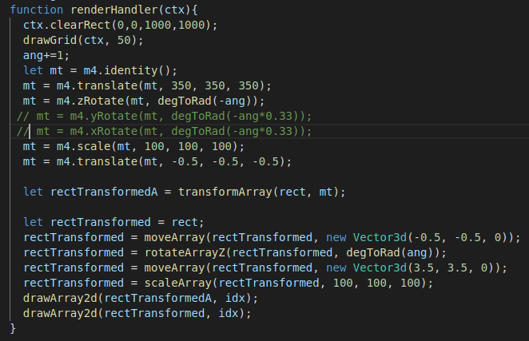

Если бы мы сделали все наоборот, модель бы вращалась относительно нулевой точки, хоть и переместилась бы в заданное место. Так наглядно выглядит очередность произведения матриц. Так же в коде дублируем аналогичную трансформацию, но реализованную матрицами для дальнейших экспериментов. На самом деле обе трансформированные модели уже выводятся и совпадают.
